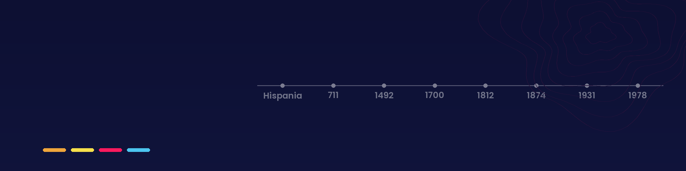

2º BachilleratoHistoria de España
Los grandes procesos de la historia de España, con especial atención a los siglos XIX y XX, y la preparación de la PAU. Pulsa en cada bloque para ver sus materiales.
Para estudiar
Materiales
Temario